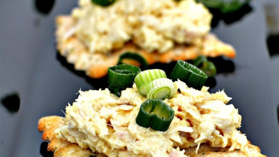

Zippy Tuna

Zippy Tuna
Great tuna snack for crackers, especially butter crackers. This tuna has a little kick.
Ingredients
- 1 (5 ounce) can chunk light tuna in water, drained and flaked.
- 2 tablespoons mayonnaise
- 1 tablespoon prepared yellow mustard
- 1 ½ teaspoons creamy prepared horseradish
- 1 teaspoon lemon juice
- 1 teaspoon garlic powder
- 1 pinch salt
Steps
- Mix tuna, mayonnaise, yellow mustard, horseradish,
lemon juice, garlic powder, and salt together in a bowl.
- Enjoy!
Return to main page